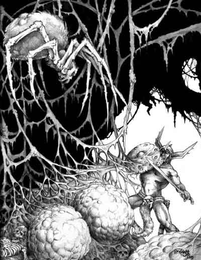

| Climate/Terrain | Foreste e Giungla |
| Frequency | Rare |
| Organization | Solitary |
| Activity Cycle | Any |
| Diet | Carnivoro |
| Intelligence | Semi-Intelligent (2-4) |
| Treasure | Vedi Sotto |
| Alignment | Neutral |
| No. Appearing | 1d3 |
| Armor Class | 4 |
| Movement | 12 |
| Hit Dice | 4 + 4 |
| Thac0 | 17 |
| No. of Attacks | 4 Artigli |
| Damage / Attacks | 1d4*4 |
| Special Attacks | Liane, Morso Velenoso |
| Special Defenses | Mimetismo |
| Magic Resistance | Nessuna |
| Size | Medium (2.00 m. di diametro) |
| Morale | Steady (12) |
| XP value | 250 |
Descrizione
L'Aracnide Predatore Tessitore di Liane è un pericoloso ragno predatore che vive nelle foreste ad alto fusto. Il suo carapace è protetto da una peluria che prende il colore della vegetazione circostante fungendo da ottimo strumento di mimetizzazione. Il ragno è dotato di otto zampe uncinate con le quali può facilmente arrampicarsi sugli alberi e sulle superfici altrimenti difficilmente scalabili.
Combat
L'Aracnide Predatore Tessitore di Liane
si mimetizza perfettamente nelle foreste.
L'Aracnide Predatore Tessitore di Liane attacca i suoi nemici in corpo a corpo
reggendosi sulle quattro zampe posteriori ed attaccando il proprio nemico con le
quattro zampe anteriori che provocano 1d4 danni da punta l'una.
Se il ragno colpisce una creatura
con almeno due delle quattro zampe potrà effettuare anche un attacco con il
proprio morso ottenendo un bonus al tiro per colpire pari a +4.
Se il morso colpisce, lo stesso provocherà
1d6 danni da taglio
ed avvelenerà la vittima con un forte veleno
dalle seguenti caratteristiche:
Onset
1 round,
Effetti
6/18,
Delay
3,
Tiro Salvezza
0,
Assuefazione
nessuna.
MIMETIZZAZIONE [FORESTE] (Moderate Special Ability): Quando la creatura resta ferma è capace di mimetizzarsi nell'ambiente indicato. In particolare, fino a che resta ferma costei non potrà essere notata dalle creature che passino ad una distanza superiore a 30 metri ed otterrà una possibilità pari all'80% di non essere notata dalle creature che le passano ad una distanza inferiore. Utilizzare quest'abilità richiede un'azione complessa dalla durata dell'intero round e la creatura potrà risultare, quindi, nascosta solo alla fine del round. Per restare nascosta la creatura non potrà compiere altre azioni complesse e non potrà spostarsi (si faccia eccezioni per piccoli movimenti effettuati sul posto). Si noti che questa abilità non può essere utilizzata nei confronti di chi ha già visto la creatura fino a che questa non esce dalla sua linea visiva. Si noti che il tiro percentuale è effettuato segretamente dalla creatura un'unica volta ed il suo risultato sarà applicato a qualsiasi soggetto fino a che costei non si sposti od agisca diversamente. Il risultato di questo tiro si considererà incrementato di una penalità del +10% al fine di verificare se la creatura si è nascosta nei confronti di soggetti dotati di Sensi Superiori o che posseggano la competenza Observation ed abbiano superato una prova nella stessa (+15% nei confronti delle creature che abbiano entrambe le caratteristiche). Il risultato del tiro si considererà incrementato di un'ulteriore penalità del +25% al fine di verificare se la creatura si è nascosta nei confronti di soggetti dotati di infravisione (che sia attiva e sempre che la creatura si trovi all'interno del suo raggio). Qualora la creatura risulti nascosta con successo alla vista dei suoi avversari ed agisca improvvisamente costei imporrà loro una penalità di -3 alla relativa prova sulla sorpresa.
L'Aracnide Predatore Tessitore di Liane prende il suo nome dalla capacità di tessere lunge liane che cosparge di materiale vischioso e che copre con vegetazione della zona in cui risiede rendendole così difficili da individuare. Il ragno diffonde queste liane in un area di 30 metri di raggio dalla propria tana. I personaggi che si avvicinano ad almeno 15 metri dalla zona dove sono presenti le liane, se dotati della competenza "observation", possono effettuare una prova con penalità di -3. Se la prova ha successo si renderanno conto della presenza delle liane. Camminare nella zona in cui sono presenti le liane non crea particolari problemi durante il combattimento il ragno potrà, invece che effettuare i suoi normali attacchi, manipolare le liane in modo tale da tentare di imprigionare le proprie prede. Si tratta di un'azione complessa che si realizza con un fattore iniziativa pari a +2. Il ragno può provare ad imprigionare una qualsiasi creatura di taglia Small, Medium o Large che si trovi entro 9 metri di distanza dallo stesso. Quando ciò si verifica la vittima dovrà superare un tiro salvezza contro paralisi per evitare di restare invischiata nelle liane. Se il tiro salvezza fallisce, la vittima resterà invischiata nelle liane e non potrà spostarsi dal luogo in cui si trova subendo una penalità di -2 al tiro per colpire ed alle prove nelle competenza che si basino su abilità fisiche, il 20% di fallire nel lancio delle magie che richiedono componenti somatici e -2 ai tiri salvezza contro effetti che sarebbero stati più facili da evitare qualora la vittima avesse avuto piena capacità di movimento, inoltre, chi attacca la vittima riceverà un bonus di +2 ai propri tiri per colpire. Per liberarsi dalle liane la vittima (e chi si trova in una posizione adiacente alla stessa) potrà tagliarle con una qualsiasi arma da taglio colpendo AC 6 e provocando, anche con diversi attacchi. un totale di 20 danni da taglio (ovviamente la vittima subirà la suddetta penalità al tiro per colpire) oppure potrà provare a strapparle superando una prova in bend bars/lift gates con un bonus di +10% alla prova (possedendo in ogni caso almeno il 10% di possibilità di riuscita). Questo tentativo, che può essere ripetuto ogni round, corrisponde ad un'azione complessa che affatica la vittima.
Habitat/Society
L'Aracnide Predatore Tessitore di Liane vive nelle foreste ad alto fusto. Questo predatore sceglie una zona particolarmente fitta di foresta dove si stabilisce e dove posiziona le sue liane restando mimetizzato in attesa delle prede. Il ragno, quindi, procederà ad attaccare le proprie vittime appena le stesse entrano nella zona delle liane in modo da poterle anche intrappolare. Periodicamente queste creature che vivono in piccoli gruppi familiari si spostano per stanziarsi in una diversa zona sempre all'interno della parte fitta della foresta.
Ecology
L'Aracnide Predatore Tessitore di Liane è un temibile predatore che evita di attaccare solo le creature di dimensioni particolarmente piccole (di taglia Tiny) o grandi (di taglia Huge o superiori). Questa creatura sopravvive difficilmente in cattività e non può essere addestrata. Nella parte centrale della zona di foresta occupata l'Aracnide Predatore Tessitore di Liane deposita le proprie uova e posiziona i corpi delle proprie vittime per poi cibarsene con tutta tranquillità. Per tale motivo si consulti la seguente tabella per determinare oggetti eventualmente presenti nella tana del ragno:
| % di ritrovamento | TIPOLOGIA | Ammontare ritrovato |
| 15% | Gemme | 1d6 |
| 50% | Monete d'oro | 2d20+20 |
| 50% | Monete d'argento | 3d20+30 |
| 50% | Monete di rame | 4d20+40 |
| 10% | Oggetto magico | 1 |
| 30% | Arma | 1d2 |
| 25% | Armatura | 1 |
Mystical Resource Sourge (Ghiandola Venefica) Quantità: 1, Presenza 33% - Effetto Particolare: Veleno - Qualità della Risorsa: Common